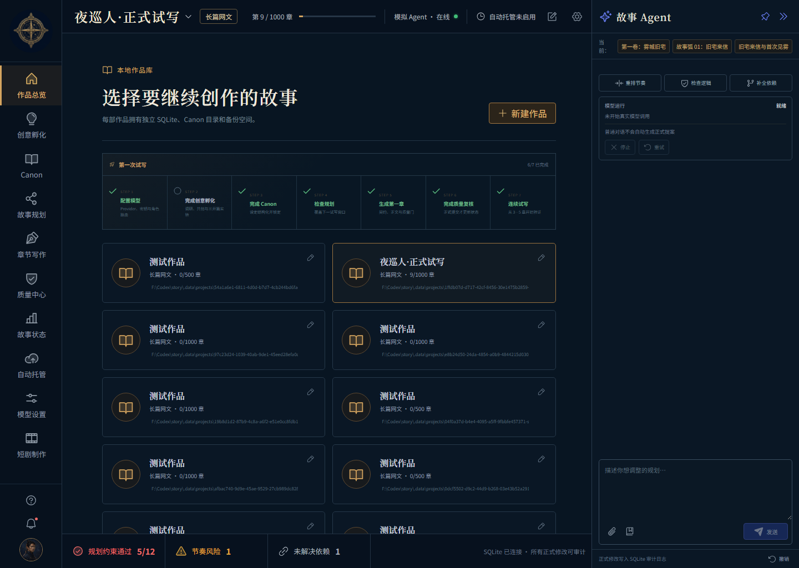
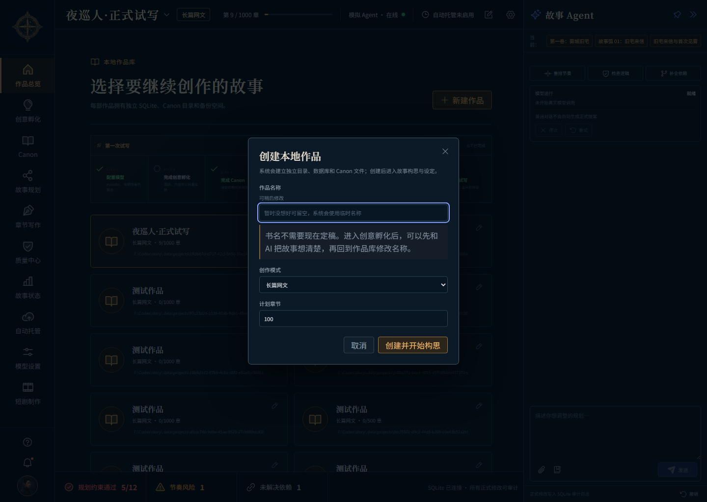
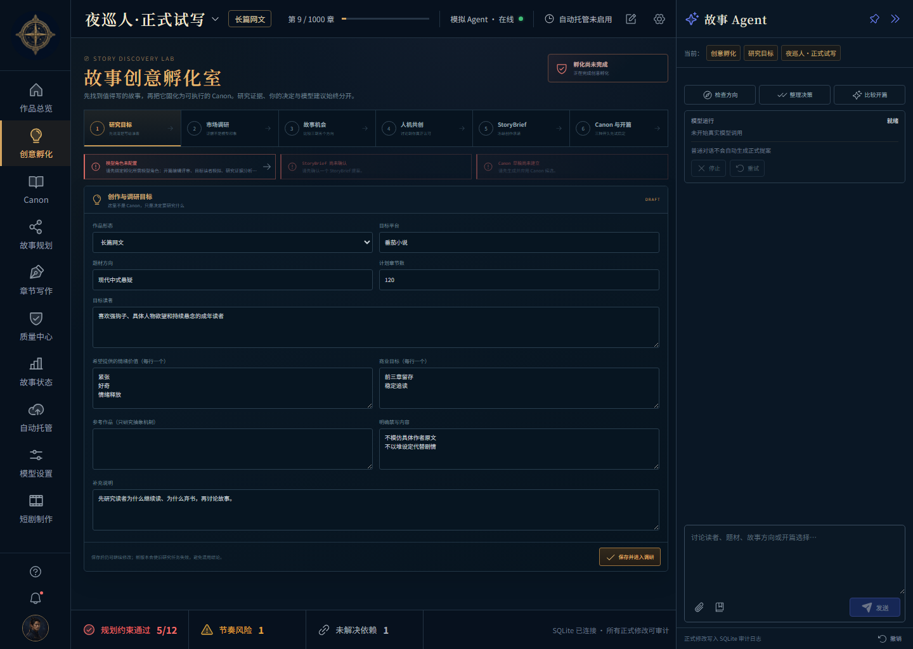
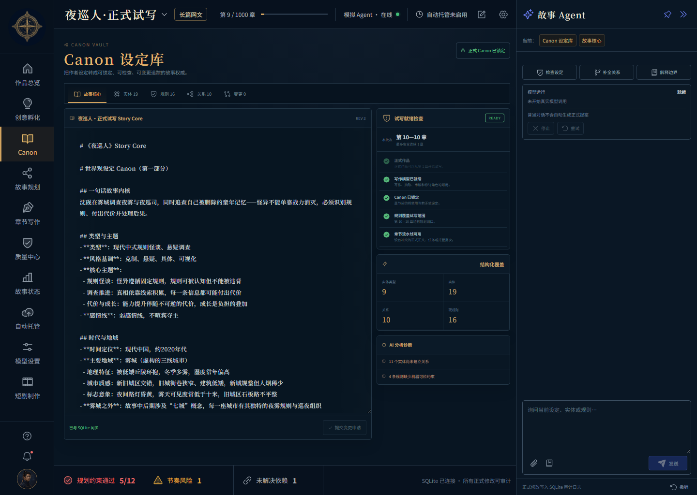
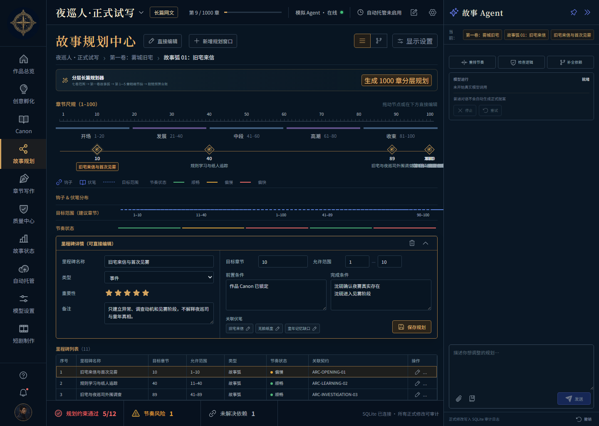
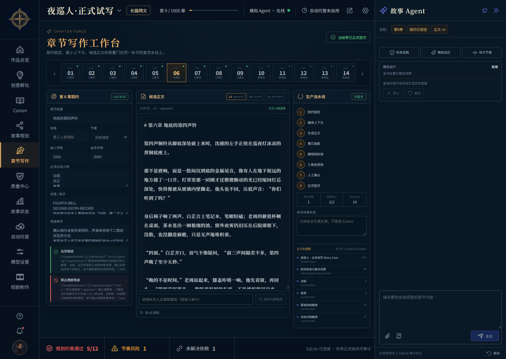
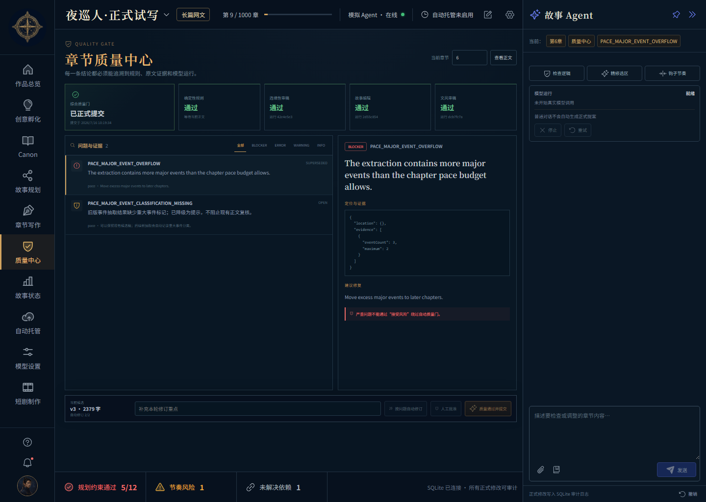
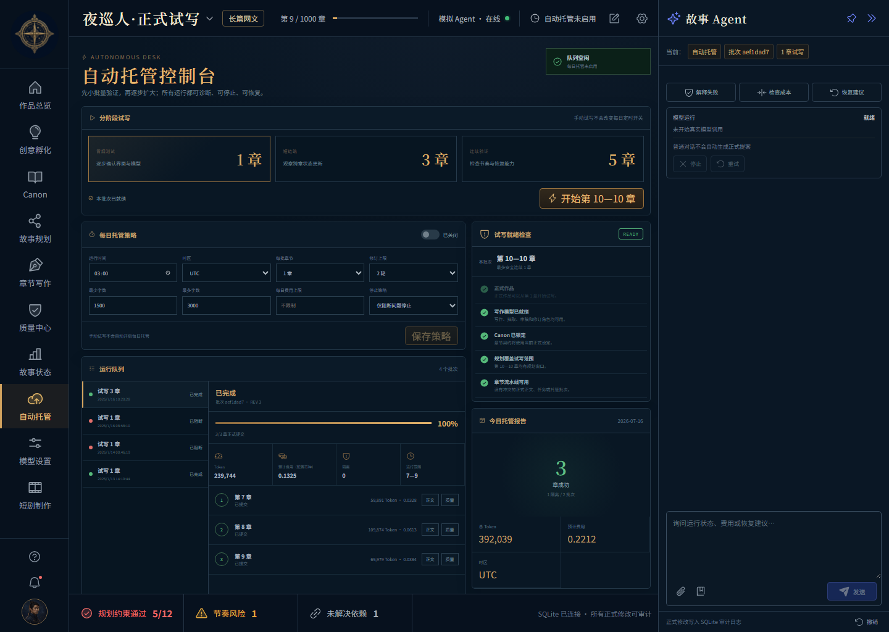
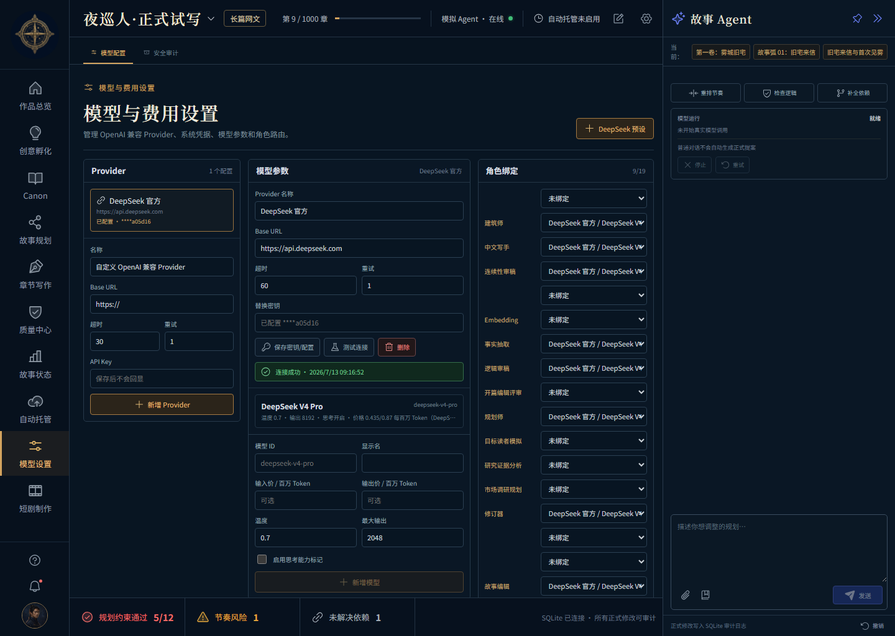

从一个模糊想法，到一部长篇小说
这不是技术文档。它只回答三个问题：现在该点哪里、这个按钮会做什么、出现红色阻断后怎么办。建议第一次先读“第一次使用”，实际操作时再按左侧目录查具体页面。
第一次使用：只按这 8 步走
如果你什么都没想好，不要直接去 Canon，也不要直接点章节写作。正确入口是“创意孵化”。作品名可以先填“未命名作品”，之后在作品总览用铅笔按钮修改。
- 先去“模型设置”完成连接测试和角色绑定。
没有可用模型，后面所有 AI 按钮都会阻断或停在队列里。
- 在“作品总览”点新建作品。
名字没有想好就使用临时名；长篇建议先填预计总章数，后续仍可调整名称。
- 进入“创意孵化”，不要跳步。
先填题材和读者，做真实竞品调研，选故事机会，至少与 AI 讨论两轮，再确认 StoryBrief。
- 比较三个开篇后，再把 Canon 锁定。
Canon 一旦锁定就成为正式设定边界，后面修改要走变更申请。
- 在故事规划中检查分卷和最近 5 章节拍。
没有当前章 ChapterBeat，系统应禁止生成，防止 AI 随意推进剧情。
- 自动托管先选“1 章冒烟测试”。
成功并读过正文后，再选 3 章；不要第一次就开每日定时托管。
- 到质量中心处理 blocker/error。
严重问题不能忽略；warning 可在填写理由后接受风险。
- 质量通过并正式提交后，才算写完这一章。
候选正文只是草稿，不会自动污染正式故事状态。
当前哪些模块能用
| 模块 | 状态 | 现在能做什么 |
|---|---|---|
| 作品总览 | 可用 | 创建、打开、改名和管理多部本地作品；每部作品独立数据库。 |
| 创意孵化 | 可用 | 竞品调研、故事机会、人机共创、StoryBrief、Canon 候选和前三章开篇实验。 |
| Canon | 可用 | 故事核心、人物/物品/组织、规则、关系、锁定和变更申请。 |
| 故事规划 | 可用 | 全书/卷/故事弧/章节窗口、里程碑、节奏和章节预算。 |
| 章节写作 | 可用 | 章节契约、候选正文、版本、任务恢复和正式提交。 |
| 质量中心 | 可用 | 硬规则、连续性、故事编辑和文风复核；自动修订与人工批准。 |
| 自动托管 | 可用 | 手动 1/3/5 章试写、运行队列、费用、恢复和每日托管策略。 |
| 模型设置 / 安全审计 | 可用 | Provider、模型、角色路由、备份恢复、审计和调用诊断。 |
| 故事状态 | 占位 | 页面入口存在，但独立的可视化状态台账尚未完成。 |
| 短剧制作 | 暂缓 | 当前不开发；先把长篇和短篇小说链路做稳定。 |
作品总览：管理你的小说库
这里相当于“书架”。一本小说对应一个独立目录和 SQLite 数据库，人物、Canon、正文和任务不会与其他小说混在一起。

1234进入创意孵化、Canon、规划、写作、质量和自动托管。
顶部会显示当前打开的作品、创作模式和正式提交到第几章。
点击卡片打开作品；卡片上的铅笔按钮用于修改作品名，不需要一开始就想好书名。
按模型、孵化、Canon、规划、第一章、质量、连续试写的顺序显示当前缺口。

| 字段 / 按钮 | 作用 | 建议 |
|---|---|---|
| 作品名称 | 创建本地作品的显示名称。 | 可先填“未命名悬疑项目”；之后在书架用铅笔改名。 |
| 创作模式 | 选择长篇网文或短篇小说等策略。 | 想长期连载选长篇；一次性完整故事选短篇。 |
| 计划章节 | 用于进度、规划边界和预算，不代表立刻生成这么多章。 | 长篇可填 300/500/1000；短篇按实际结构设置。 |
| 创建并开始构思 | 建立独立数据库和 Canon 文件，然后跳到创意孵化。 | 点击后请等待按钮显示处理中；不要连续重复点击。 |
创意孵化：决定故事值不值得写
这是新作品真正的起点。它不是让 AI 直接瞎编世界观，而是先理解目标读者和市场，再由你确认故事方向。

12345研究目标 → 市场调研 → 故事机会 → 人机共创 → StoryBrief → Canon 与开篇。
题材方向可自由组合填写；新研究目标自动继承作品计划章节。还可限定或排除研究域名。
Tavily 发现公开页面，Firecrawl 提取可访问正文，DeepSeek 负责归纳；密钥保存在 Windows 凭据管理器。
在共创阶段与它讨论取舍。你的决定、模型建议和研究证据会分开保存。
只有研究、方向、讨论、StoryBrief、Canon 和开篇都满足条件，才会显示可以向下游推进。
| 阶段 | 你要做什么 | 完成标志 |
|---|---|---|
| 1. 研究目标 | 说清写给谁看、想让读者获得什么感受，以及哪些内容不能写。题材可写成“古代悬疑探案 + 女性成长 + 言情”。 | 新目标继承作品计划章节；旧目标与作品不一致时，点“同步”后保存新版本。 |
| 2. 市场调研 | 首次填写 Tavily 搜索和 Firecrawl 提取密钥，点击“开始真实调研”；失败可恢复，运行中可取消。 | 只处理公开可访问网页；登录、付费墙或反爬内容不保证可读。阅读后人工接受或拒绝报告。 |
| 3. 故事机会 | 生成 3—5 个方向，比较核心卖点、人物欲望、冲突和连载发动机。 | 排除不喜欢的，点击“选这个方向”。 |
| 4. 人机共创 | 至少进行两轮真实讨论，明确想要和不要什么。 | 决策台账中能区分“已确认 / 待确认 / 已否决”。 |
| 5. StoryBrief | 生成提案并审阅。它是后续 Canon 的上游合同。 | 点击“确认成为当前 StoryBrief”；不满意就拒绝后继续讨论。 |
| 6. Canon 与开篇 | 生成 Canon 候选，通过 Analyzer 后应用到草稿；再生成三个不同策略的开头。 | 选一个开篇，扩写第 2—3 章，并逐章人工批准。 |
Canon 设定库：故事世界的正式法律
Canon 读作“卡农”，在这里就是“正式设定库 / 故事圣经”。它保存人物、物品、组织、能力等级、代价、规则和关系，防止 AI 写着写着把设定改掉。

1234“草稿可编辑”时可直接改；“正式 Canon 已锁定”后只能走变更申请。
故事核心、实体、规则、关系和变更申请。实体包括人物、物品、地点、组织与能力等。
保存世界观、故事内核、文风、主线和禁区；“AI 分析并结构化”会提取成可校验对象。
右侧显示缺失模型、实体、关系或硬规则；阻断项处理完才能安全试写。
| 按钮 | 实际作用 | 什么时候用 |
|---|---|---|
| 保存草稿 | 只更新 Canon 草稿，不锁定。 | 你仍在调整世界观时。 |
| AI 分析并结构化 | 把自然语言拆成人物、物品、规则和关系，并报告缺口。 | 故事核心文字基本完整后。 |
| 锁定 Canon | 二次确认后把设定变成章节生成的权威边界。 | 实体、等级、物品、规则、关系都检查过以后。 |
| 提交变更申请 | 锁定后生成 before/after 差异，不直接覆盖正式设定。 | 小说写到中途确实需要修改设定时。 |
| 接受并应用 / 拒绝 | 确认后更新 Canon 并重建索引；拒绝则正式设定不变。 | 在“变更申请”分栏审阅时。 |
故事规划：控制 100 章不会 20 章写完
规划不是正文大纲的长段文字，而是可检查的剧情预算：某件事最早何时能发生、目标何时发生、最晚何时必须发生，以及需要哪些前置条件。

12345全书 → 卷 → 故事弧 → 章节窗口。时间轴显示里程碑、钩子、伏笔和状态。
生成全书卷界、故事弧和最近精确节拍；校验通过后才可应用。
目标章节、允许范围、前置条件、完成条件和关联伏笔都可以编辑。
偏快、偏慢、越界和依赖缺失会被标出；先修复红色越界与缺失依赖。
右侧可重排节奏、检查逻辑、补全依赖；必须接受选中项才会写入。
最早章节 → 目标章节 → 最晚章节，章节契约只能消耗当前 ChapterBeat 的预算，不能把后续故事弧直接完成。| 按钮 | 说明 |
|---|---|
| 直接编辑 | 编辑当前里程碑字段；保存前会做范围和依赖校验。 |
| 新增规划窗口 | 创建新的章节范围、目标章和目标说明。 |
| 生成 1000 章分层规划 | 按当前 Canon 生成全书层、卷层、故事弧层和最近章节节拍；数字随作品总章数变化。 |
| 应用正式规划 | 只有范围与节拍校验通过才可点。应用后成为章节契约来源。 |
| 重新分析节奏 | 重新检查推进速度、章节窗口和依赖，不等于自动改正文。 |
| 保存规划 | 把人工编辑写入数据库并更新 revision。 |
章节写作：候选稿不等于正式正文
每章都经过“契约 → 上下文 → 正文 → 事实抽取 → 规则 → 多角色复核 → 人工确认 → 正式提交”。中途失败可以恢复，旧版本始终保留。

12345绿色已提交；黄色表示当前章待复核；灰色未规划。点击数字切换章节。
规定本章能推进什么、不能提前完成什么、人物、伏笔、字数和节奏。
v1/v2/v3 都保留；人工修改或 AI 精修会创建新版本，而不是覆盖旧稿。
右侧 8 步显示任务当前停在哪里、修订几轮和错误代码。
只影响本次生成，不修改 Canon。适合临时强调氛围、视角或某个细节。
| 状态 / 按钮 | 你应该怎么做 |
|---|---|
| 未规划 | 先去故事规划生成该章 ChapterBeat；没有本章节拍不应生成。 |
| 生成章节契约 | 根据当前章节拍和正式 Canon 推导本章边界。 |
| 保存草稿 / 校验并锁定 | 先检查目标和“禁止提前完成”，确认后锁定。锁定后才能创建任务。 |
| 创建写作任务 / 运行流水线 | 先建立可恢复任务，再实际调用模型。模型调用期间不会长期占用 SQLite 写事务。 |
| 保存为新版本 | 人工编辑后填写修改原因；只在“待人工复核”状态可保存。 |
| 停止任务 / 恢复任务 | 停止是安全请求；失败、中断或取消后按最新 revision 恢复，不覆盖已有正式正文。 |
| 已提交 | 正文、事实、伏笔和状态已原子写入正式故事；质量中心不会再显示提交按钮。 |
质量中心：红色阻断到底怎么办
这里集中展示确定性规则、连续性、故事编辑和文风四类检查。你看见“已正式提交”，就说明这一章已经完成，不需要再找提交按钮。

1234显示等待、阻断、可批准或已正式提交。
确定性规则最硬；连续性、故事编辑和文风由各角色独立复核。
点击问题查看原文位置、证据、规则代码和修复建议。
按问题自动修订、人工批准、质量通过并提交；只有状态允许时才可点。
| 级别 / 状态 | 含义 | 处理 |
|---|---|---|
| blocker / error | 严重边界、连续性或硬规则问题。 | 不能“接受风险”绕过；点击自动修订或回写作页人工改稿。 |
| warning | 可能影响质量，但不是硬冲突。 | 可以修订；也可填写判断依据后“记录并接受”。 |
| superseded | 旧版本曾经的问题，已被新版本取代。 | 作为历史审计保留，不再阻断当前正文。 |
| 按问题自动修订 | 模型按当前问题创建新候选稿。 | 最多两轮；仍失败则交给人工判断。 |
| 人工批准 | 你明确承担判断后批准当前候选。 | 会写入审计，适合模型无法正确判断但你确认合理的情况。 |
| 质量通过并提交 | 把正文与状态原子提交为正式章节。 | 仅在待人工复核、无 blocker/error、revision 未漂移时可点。 |
自动托管：先 1 章，再 3 章，再 5 章
手动试写和每日托管是两件事。上面的 1/3/5 章按钮只创建一次批次，不会擅自打开每日定时开关。

123451 章冒烟测试界面和模型；3 章观察跨章状态；5 章验证节奏与恢复。
例如“第 10—10 章”就是只写第 10 章；“第 10—12 章”是连续写三章。
开关、时间、时区、每批章节、字数、修订上限、费用上限和停止策略。
显示批次状态、章节进度、Token、费用和错误；按 availableActions 显示停止、恢复或补跑。
模型、Canon、规划、活动任务和费用逐项检查。红项未处理，开始按钮会变灰。
| 界面文字 | 实际意思 |
|---|---|
| 冒烟测试 · 1 章 | 只验证下一章完整流水线；不是章节标题。 |
| 短链路 · 3 章 | 连续写下一批三章，用于观察事实、人物和伏笔是否跨章更新。 |
| 连续验证 · 5 章 | 更高成本的连续性和恢复测试，前面稳定后再用。 |
| 开始第 6—6 章 | 当前正式进度为第 5 章，选择了 1 章，所以本批次只写第 6 章。 |
| 试写范围存在未收口任务 | 同一章节已有失败、取消或待复核任务；先在队列点恢复，或到章节工作台处理。 |
| AUTOMATION_REVISION_LIMIT_REACHED | 自动修订已达到两轮上限；系统为防止无限烧钱而停止，需要人工看稿。 |
模型设置与安全审计
模型配置决定每个工作角色用哪个模型；安全审计负责备份、恢复、调用记录和错误诊断。

1234左侧列表用于选择已有 Provider；快速预设和自定义表单都在列表下方，添加后统一进入列表。API Key 保存后不会回显。
确认地址、密钥和模型列表可用。只有保存过的 Provider 才能测试。
模型 ID、显示名、输入/输出价格、温度、最大输出和推理能力标记。
把写作、事实抽取、连续性、故事编辑、文风、修订、架构和分析角色分配给模型。
- 创建或选择 Provider。
DeepSeek 可用官方预设；使用火山引擎 Coding Plan 时，点同名预设，系统会填入 OpenAI 兼容地址和两项推荐模型。
- 保存 API Key 与配置，再点“测试连接”。
成功状态会记录测试时间；完整密钥不会进入 SQLite、日志或备份。
- 新增模型。
模型 ID 必须与服务端实际可用名称一致。设置价格后才能正确执行每日费用上限。
- 完成角色绑定。
双模型推荐分工中，Kimi K2.6 负责正文、修订和创意；DeepSeek V4 Pro 负责规划、事实和独立审校。选择两项模型后点“套用双模型分工”；Embedding 保持单独配置。缺少任何试写必需角色，自动托管就绪检查会显示阻断。
安全审计分栏
| 功能 | 说明 |
|---|---|
| 创建备份 | 生成带 SHA-256 清单的项目 ZIP；不包含 API Key。 |
| 恢复上传 | 校验 ZIP 后创建一部新作品，不覆盖原项目。 |
| 审计时间线 | 查看提案、Canon、规划、章节和自动托管的重要写入事件。 |
| 模型调用记录 | 查看角色、模型、Token、耗时和状态，不保存完整敏感正文。 |
| 错误诊断 | 按请求 ID 和错误代码定位断线、超时、预算、JSON 或 revision 冲突。 |
右侧“故事 Agent”怎么用
它会自动知道你当前在哪部作品、哪个页面、哪一章、哪个契约或选区。普通聊天只给建议；需要改正式数据时，必须形成候选版本或差异提案并由你确认。
只分析因果、人物动机、连续性或 Canon 冲突，不直接修改。
在章节正文中先选中文字，再让 AI 输出替换建议；点击应用后仍是候选版本。
规划页生成字段级 before/after 提案，可以逐项接受或整体拒绝。
检查里程碑缺少的前置条件、人物或伏笔，显示下游影响。
自动托管页根据当前批次说明错误和不重复付费的恢复方法。
只有最近操作存在可逆审计事件时可用；不能撤销已经产生外部副作用的模型费用。
常见问题与最快处理方式
先看按钮是否灰色、右侧是否有 blocker、顶部是否断线。创建作品时按钮会进入处理中；若出现重复作品，刷新后只打开一个，不要继续连点。
这是范围，不是写错。你选择了 1 章，下一章是第 6 章，所以起止都是 6。
检查问题状态是否 superseded，以及顶部是否“已正式提交”。旧问题保留用于审计，不代表当前版本失败。
查看右侧“试写就绪检查”。模型、Canon、规划、费用或旧任务任一阻断都会禁用按钮。
这是安全停止，不是死机。到写作页读候选稿，人工修改成新版本，或人工判断问题是否真成立。
页面数据已经过期。刷新后重新打开当前对象再操作，不要用旧窗口反复提交。
这是设计目标。任务、候选稿和运行记录从 SQLite 恢复；按界面给出的“恢复”操作继续。
不会。人工修改产生新候选稿；只有正式提交时，经过验证的事实和状态才原子写入正式台账。
什么时候算一章真正写完？
什么时候适合开启每日自动托管？
可以同时写几部小说吗？
“夜巡人”目前怎么继续测试
现有“夜巡人·正式试写”已经提交到第 9 章，可用来验证技术连续性。但前 1—5 章是在创意孵化链路完善前生成的，不能代表最终的商业故事质量。
- 技术测试：
在自动托管选择 1 章，按钮若显示“开始第 10—10 章”，就是只生成第 10 章。
- 生成后读第 10 章：
重点看它是否正确继承第 9 章人物知识、能力、物品状态和伏笔，不只看文笔。
- 到质量中心确认状态：
若已正式提交就不再点按钮；若阻断，先判断是真问题、抽取误判还是规划缺口。
- 真正测试故事吸引力：
建议另建一部新作品，从创意孵化开始完成竞品调研、共创和三开篇实验，再决定是否投入长篇。